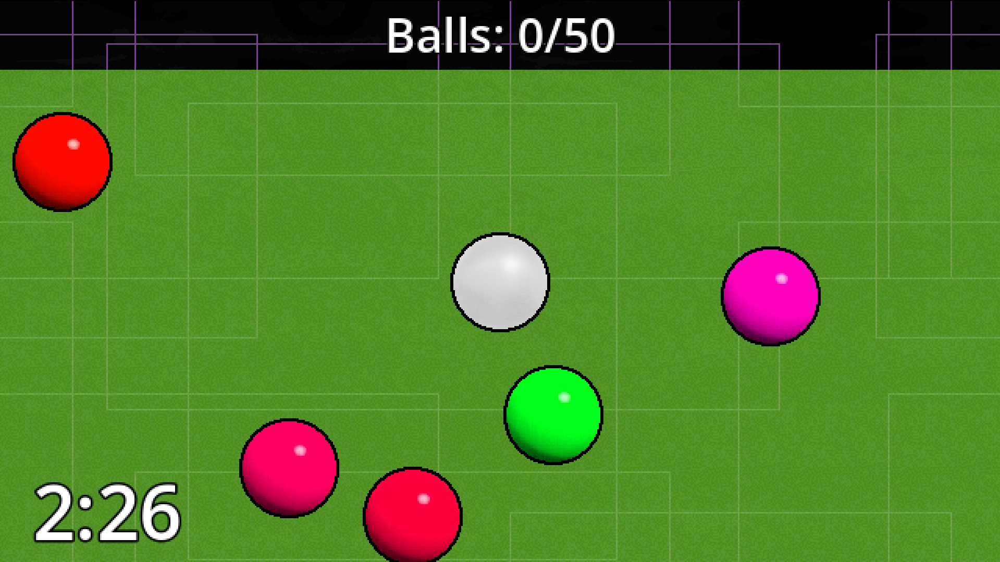
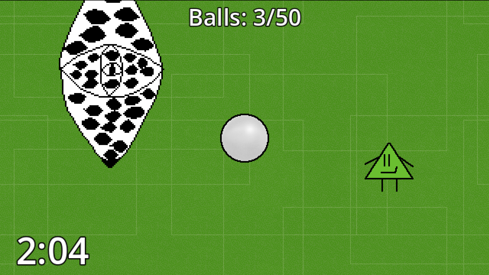
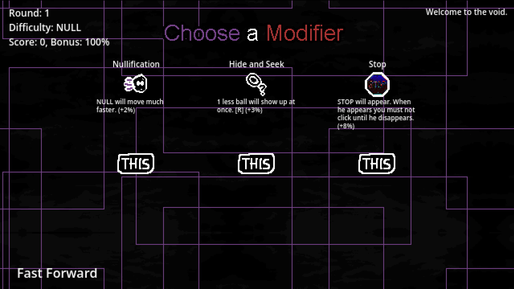
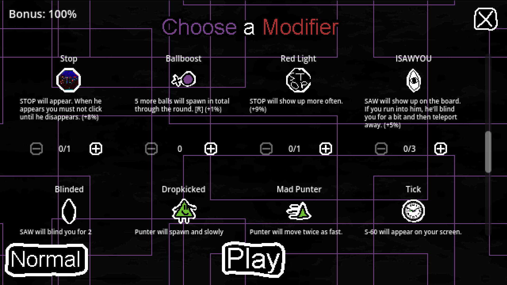
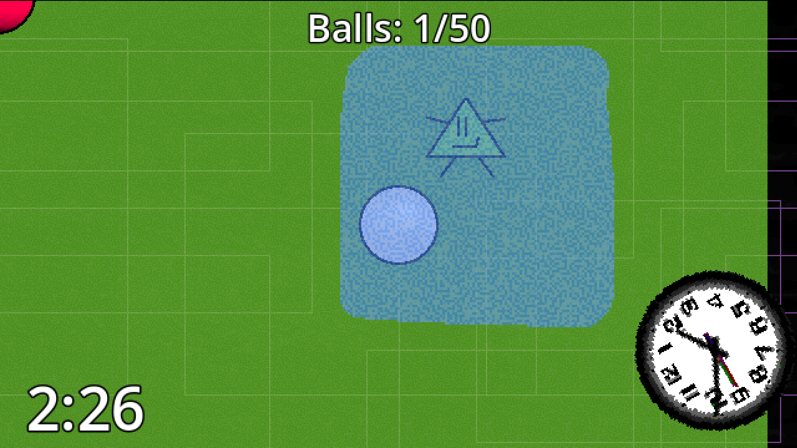
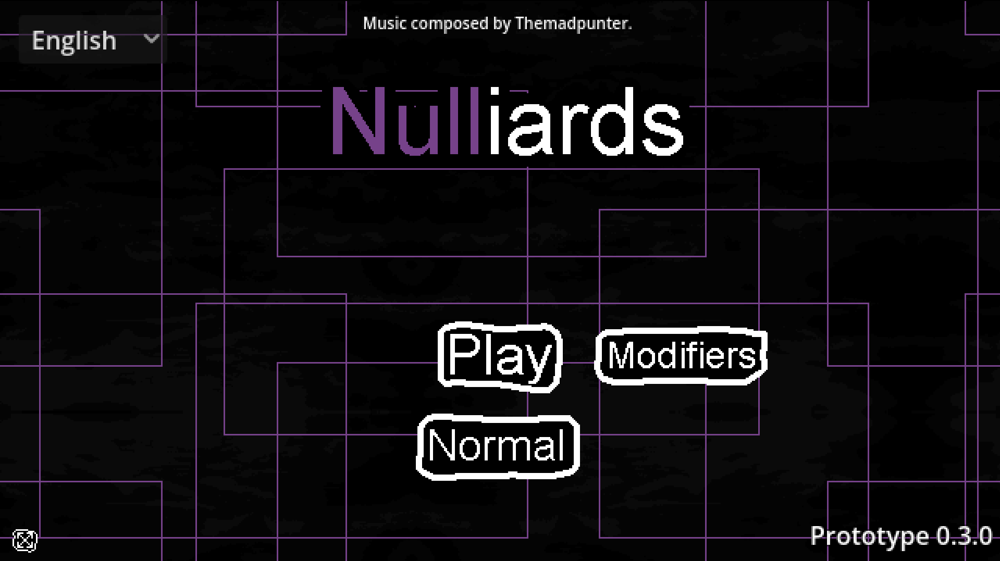
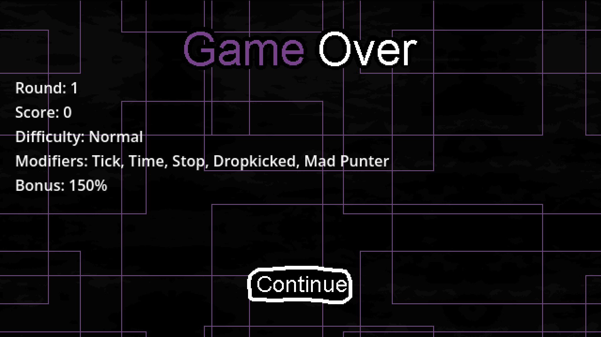
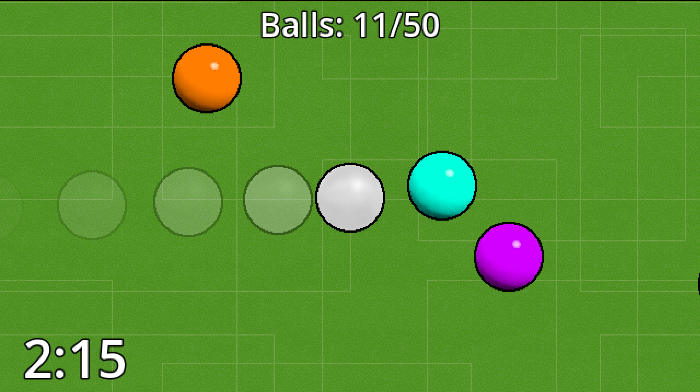
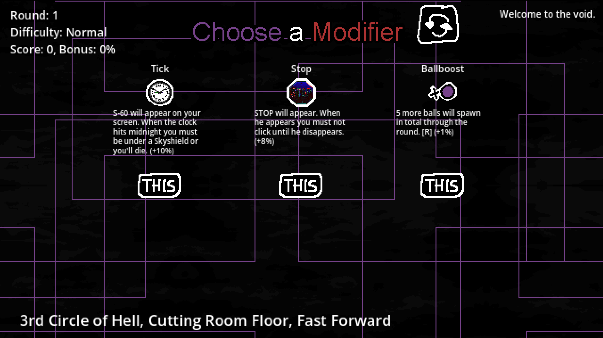

NULLIARDS is a roguelike billiards game where your goal is to hit all of the balls off the table as fast as possible. However, this is notably complicated by the fact that various entities chase you, attack you, and try to end your run. How long can you survive?


Knock all the balls off of the map, then choose modifiers to complicate your run in the intermission. Some modifiers will complicate the game, some modifiers will spawn entities, and all are extremely challenging. After you choose your modifier, it's back to the fun of billiards, dodging, and ultimately, survival.


NULLIARDS contains an originally composed soundtrack with high quality drum and bass tracks composed by Themadpunter for the game. You can listen to the soundtrack, and download high quality FLAC versions on Bandcamp: https://themadpunter.bandcamp.com/album/nulliards-original-soundtrack
Join the official NULLIARDS community Discord server for updates and more: https://discord.gg/dtQnZk6kXr.




